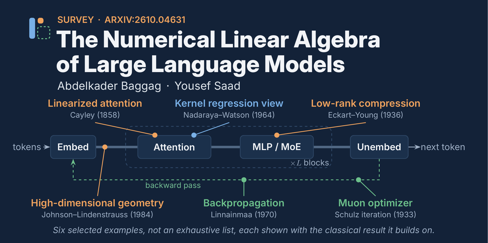

Foundations
- AI and deep-learning foundations
- Multilayer perceptrons and loss functions
- Stochastic optimization
- Computational graphs and backpropagation
- Matrix and tensor computations
Qatar Computing Research Institute (QCRI), Hamad Bin Khalifa University (HBKU)Department of Computer Science and Engineering, University of Minnesota

The Numerical Linear Algebra of Large Language Models examines modern large language models from a numerical linear algebra perspective. The paper has two main goals: to explain the key concepts behind LLMs in a form accessible to specialists in numerical methods, and to examine the numerical linear algebra ideas that appear throughout modern LLM techniques.
Starting from deep neural networks and Transformer architectures, the survey develops connections to high-dimensional representation geometry, intrinsic dimension, interpretability, low-rank and spectral structure, randomization, model compression, and matrix-based optimization. The broader perspective is that many important components of modern AI can be understood through matrices, tensors, operators, projections, and structured numerical methods.
The survey develops the subject from neural-network and Transformer foundations to representation geometry, structured approximations, and modern matrix-based optimization.
Numerical linear algebra enters LLMs at several levels. Matrix and tensor operations provide the computational language of deep learning and Transformers, while numerical methods provide ways to exploit structure for training and inference. Backpropagation itself reduces to sequences of matrix operations, and low-rank approximations and structured tensor computations are repeatedly used to reduce computational and memory costs.
LLMs operate in high-dimensional spaces, but their representations and useful parameter updates often exhibit lower-dimensional structure. This connects high-dimensional geometry, Johnson–Lindenstrauss ideas, intrinsic dimension, low-rank subspaces, and representation analysis. Linear algebra also provides explicit objects for interpretability: attention matrices, residual-stream decompositions, projections, and subspaces.
Low-rank approximations support model compression and parameter-efficient adaptation; randomized projections and structured approximations can reduce the cost of attention; and matrix-based preconditioning provides the foundation for optimization methods such as K-FAC, Shampoo, and Muon. In Muon, for example, a Newton–Schulz polynomial iteration is used to approximate a polar factor of the momentum matrix.
Additional resources and updates will be added as the project develops.
If you use this work, please cite:
@article{baggag2026numerical,
title = {The Numerical Linear Algebra of Large Language Models},
author = {Baggag, Abdelkader and Saad, Yousef},
journal = {arXiv preprint arXiv:2610.04631},
year = {2026}
}arXiv: 2610.04631